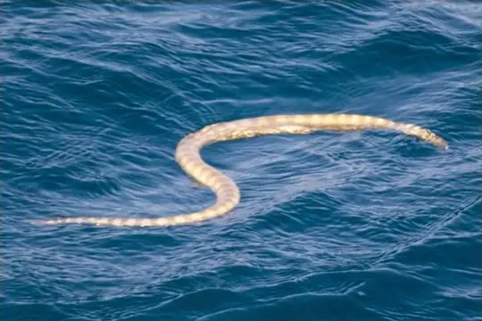
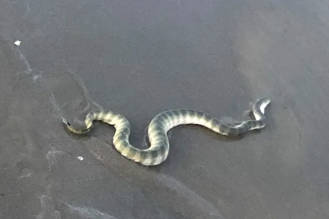
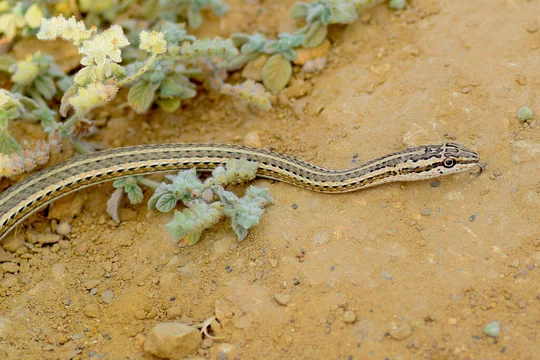
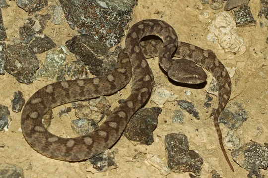
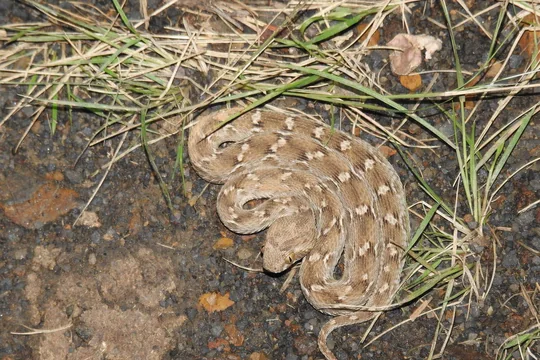
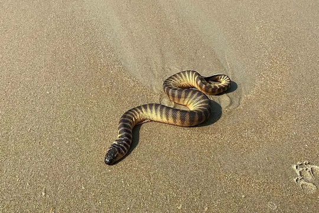

Snakes of United Arab Emirates
17 living snake species are recorded in the United Arab Emirates in SnakeList: 12 venomous and 5 non-venomous, from 6 families.
- 17living species
- 6families
Danger to people · tap a number to show only those snakes
- 0giant constrictors
Harmful = dangerously venomous + giant constrictors. Low risk = not venomous and not a giant constrictor. Mildly venomous snakes have no serious bites to people documented. Any snake can bite.
These totals count the unique living snake species SnakeList records in the United Arab Emirates. A species counts if it is recorded anywhere in the country, so not every snake lives in every part of it.
In SnakeList’s checklist filters
How many of the 17 living species here each filter in the SnakeList app picks out – tap a number to show only those snakes.
Snake family4 types, 6 families
Type
Family
Habitats14 habitat groups
Habitats are estimated from where each snake is recorded and what kind of snake it is, as in SnakeList; a snake can count in several.
Characteristics12 venomous, 1 constrictors
Constrictor and Non-constrictor count only snakes whose family or genus is documented as constricting or not; the rest are not documented.
Other filters1 popular, 1 rare
- 0invasive
- 0extinct
Species
Showing 17 species
 Arabian Cat SnakeTelescopus dhara
Arabian Cat SnakeTelescopus dhara
Arabian Gulf Sea SnakeHydrophis lapemoides Arabian Sand BoaEryx jayakari
Arabian Sand BoaEryx jayakari Arabian Sand ViperCerastes gasperettii
Arabian Sand ViperCerastes gasperettii Awl-headed SnakeLytorhynchus diadema
Awl-headed SnakeLytorhynchus diadema
Common SeasnakeHydrophis schistosus
Forskal Sand SnakePsammophis schokari- No photo yetHardwicke's Spine-bellied SeasnakeHydrophis hardwickii
 Hook-snouted Worm SnakeMyriopholis macrorhyncha
Hook-snouted Worm SnakeMyriopholis macrorhyncha Moila SnakeMalpolon moilensis
Moila SnakeMalpolon moilensis
Oman Saw-scaled ViperEchis omanensis Ornate Sea SnakeHydrophis ornatus
Ornate Sea SnakeHydrophis ornatus Persian Horned ViperPseudocerastes persicus
Persian Horned ViperPseudocerastes persicus
Saw-scaled ViperEchis carinatus
Short Sea SnakeHydrophis curtus Wadi RacerPlatyceps rhodorachis
Wadi RacerPlatyceps rhodorachis Yellow Sea SnakeHydrophis spiralis
Yellow Sea SnakeHydrophis spiralis
No snakes in United Arab Emirates match.
United Arab Emirates’s snakes in numbers
- Families: Elapidae 6, Viperidae 4, Colubridae 3, Psammophiidae 2, Boidae 1, Leptotyphlopidae 1.
How precisely they are recorded
Of the 17 living species recorded in the United Arab Emirates, 12 are recorded by emirate in SnakeList’s data; 5 are recorded only for the United Arab Emirates as a whole, so the emirate pages list them as possible rather than recorded. SnakeList records each species by emirate, not by exact spot, so a species listed for a emirate may live in only part of it.
Emirates
The emirates where SnakeList records snakes, with how many living species are recorded in each. Each page has its species, venomous snakes, families, the species found only there, its cities and neighbours.
- Emirate of Abu Dhabi 6 species
- Emirate of Dubai 8 species
- Emirate of Fujairah 4 species
- Emirate of Ras Al Khaimah 5 species
- Emirate of Sharjah 7 species
- Emirate of Umm Al Quwain 4 species
No place matches that.
Cities
Its biggest cities, biggest first. SnakeList records snakes by emirate, not by city, so each city page shows the species recorded in its emirate and, separately, those only possible there - not species confirmed in the city.
- Dubai Emirate of Dubai
- Sharjah Emirate of Sharjah
- Abu Dhabi Emirate of Abu Dhabi
- Ras Al Khaimah City Emirate of Ras Al Khaimah
- Musaffah Emirate of Abu Dhabi
No place matches that.